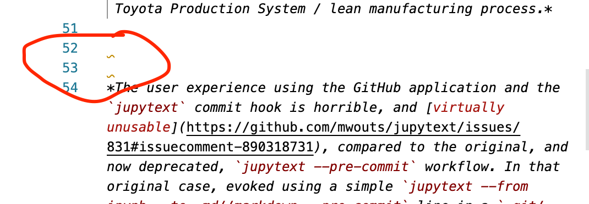

Linters¶
Linters are quality tools that can check code or text for “correctness”. For example, a code linter might perform a static analysis of programming code to check that the code syntax is correct. Other, more advanced linters, may also try to identify simple bugs or contravention of coding guidelines in a code fragment. In text documents, tools such as spell-checkers might be thought of as providing a “linting” style service.
Linters will typically make recommendations about suggested changes, with an option for the user then to accept the change. Some tools may be configurable to automatically apply changes, although there is an element of risk here as the changes may change the intended sense of a piece of text or the intended behaviour of a piece of code.
There may also be an element of choice in the way the linter reports suggested changes to the user. For example, a separate report may be generated that lists the files within which issues were found, along with the line numbers of locations of the identified errors, and a statement of the error and potential correction.
In other cases, the warning may be inserted into the original document at the point at which the error occurs. For example, in a Jupyter notebook, a linting error might reasonably be added as a warning style output from a code cell that contains the error.
In a live editing environment, the warning might appear as a warning flag with a pop-up that describes the error.
Linting Notebook Code With nbqa¶
Code in notebook code cells can be linted using various tools including pydocstyle (for check docstrings), pylint and flake8.
Linting docstrings With pydocstyle¶
Linting of docstring syntax (Python function documentation strings) is based on the PEP 257 Docstring Conventions.
nbqa pydocstyle --nbqa-diff FILENAME.ipynb
FILENAME.ipynb:cell_1:0 at module level:
D100: Missing docstring in public module
FILENAME.ipynb:cell_1:8 in public function `myfun_code`:
D400: First line should end with a period (not 'g')
FILENAME.ipynb:cell_1:8 in public function `myfun_code`:
D401: First line should be in imperative mood; try rephrasing (found 'simple')
FILENAME.ipynb:cell_1:8 in public function `myfun_code`:
D403: First word of the first line should be properly capitalized ('Simple', not 'simple')
Currently, a D100 error will always be returned against a 0 indexed cell. Creating a .pydocstyle settings file provides a means of ignoring this error.
[pydocstyle]
ignore = D100
Static Code Analysis Using pylint¶
The pylint package will perform static code analysis against all code cells and return error reports identifying errors and the cells in which they occur.
nbqa pylint --disable=C0114,C0103 FILENAME.ipynb
************* Module FILENAME
FILENAME.ipynb:cell_1:4:0: E0611: No name 'pi' in module 'math' (no-name-in-module)
FILENAME.ipynb:cell_1:11:4: W0612: Unused variable 'more_code' (unused-variable)
FILENAME.ipynb:cell_1:1:0: W0611: Unused pandas imported as pd (unused-import)
FILENAME.ipynb:cell_1:2:0: W0611: Unused import time (unused-import)
FILENAME.ipynb:cell_1:4:0: W0611: Unused pi imported from math (unused-import)
FILENAME.ipynb:cell_1:2:0: C0411: standard import "import time" should be placed before "import pandas as pd" (wrong-import-order)
FILENAME.ipynb:cell_1:4:0: C0411: standard import "from math import pi" should be placed before "import pandas as pd" (wrong-import-order)
Static Code Analysis Using flake8¶
The flake8 package is a widely extended tool for running all manner of code linting tests. When plugins are installed, they are automatically enabled when flake8 is run from the command line, either natively, or via nbqa.
nbqa flake8 --extend-ignore=D100 FILENAME.ipynb
FILENAME.ipynb:cell_1:1:1: F401 'pandas as pd' imported but unused
FILENAME.ipynb:cell_1:2:1: F401 'time' imported but unused
FILENAME.ipynb:cell_1:4:1: F401 'math.pi' imported but unused
FILENAME.ipynb:cell_1:8:1: D400 First line should end with a period
FILENAME.ipynb:cell_1:8:1: D401 First line should be in imperative mood; try rephrasing
FILENAME.ipynb:cell_1:8:1: D403 First word of the first line should be properly capitalized
FILENAME.ipynb:cell_1:16:5: F841 local variable 'more_code' is assigned to but never used
Useful extensions include:
flake8-print: check forprintstatements;flake8-comprehensions: help simplify, and identify unnecessary, list / set / dict comprehensions;flake8-bugbear: attempt to identify simple bugs.
The flake8-markdown package can be used to apply flake8 linting to code inside fenced code blocks in markdown documents. One way of applying this form of linting is to convert a notebook to a markdown format using Jupytext and then run flake8 over the markdown file using a command of the form flake8-markdown FILENAME.md.
Linting Markdown Using markdownlint¶
Formatters such as mdformat can be used to automatically format markdown documents in an opinionated way. Issues can then be identified in the form of differences between the formatted version of a markdown file and its original version.
If a more specific linting function is required, then a package such as markdownlint can be used to generate an issues report over one or more markdown files according a generous selection of markdown linting rules:
mdl .md/FILENAME.myst
.md/FILENAME.myst:53: MD009 Trailing spaces
.md/FILENAME.myst:58: MD009 Trailing spaces
.md/FILENAME.myst:45: MD012 Multiple consecutive blank lines
.md/FILENAME.myst:49: MD023 Headers must start at the beginning of the line
.md/FILENAME.myst:52: MD046 Code block style
The markdownlint functionality is also available via the DavidAnson.vscode-markdownlint VS Code extension. This provides live, inline alerts of markdown linting errors, as show in the screenshot below.

We can also invoke the markdown linter via a git pre-commit hook (for more on this, see the Pre-Commit Framework section).

Using this in association with the VS Code view, we can refer to some of the highlighted problematic lines and see that the errors were also raised in the editor view:

Spell Checking Notebooks¶
Although there are currently no specific tools for spell-checking notebooks, there are various off-the-shelf tools that we can use to identify typographical errors in notebooks.
codespell¶
The codespell package provides a simple tool for checking texts against dictionary terms as well as other common typographical errors found in programming code. (The original / default dictionary can be found here.)
An updated dictionary can be easily created and used as the basis of the spellcheck. A simple “ignored words” text file can also be used to ignore particular words (-I FILENAME.txt or --ignore-words=FILENAME.txt).
Files can be explicitly excluded from testing using the -x command line switch.
A typo can report can be created over multiple files with the output rendered to a simple report document:
codespell .*//*.ipynb > codespell.txt

Running codespell with the -w or --write-changes flag will apply recommended changes in-place.
In principle, a very simple dictionary could be defined with specific target words and replacements identified, and then used to update a set of notebook files using the -w flag. Rewrite terms should be in the form calulated->calculated, one per line. The name of the file containing this dictionary can be passed in via the -D flag (for example, -D MYDICTIONARY.txt).
pyspelling¶
The pyspelling package is an extensible package for checking for typographical errors using the Aspell or Hunspell Linux applications across a range of file types. A fork of the package adds a simplification to allow for independent checking of markdown and Python code cells in notebooks.
Spellchecking in Python files uses a Python filter that checks words in comments, docstrings and strings.
A Markdown filter will spellcheck Markdown texts. A range of additional extension filters supported by python-markdown can be used to refine the Markdown pipeline.
Reports for Markdown and Python cells can be generated separately by specifying the appropriate (forked) pyspelling filter:
pyspelling -c ipyspell.yml -S "./*.ipynb" -n Markdown > typos_md.txt
pyspelling -c ipyspell.yml -S "./*.ipynb" -n Python > typos_py.txt
TO DO: in generating reports, it might also be useful to be able to see the typo in a short concordance context (example).